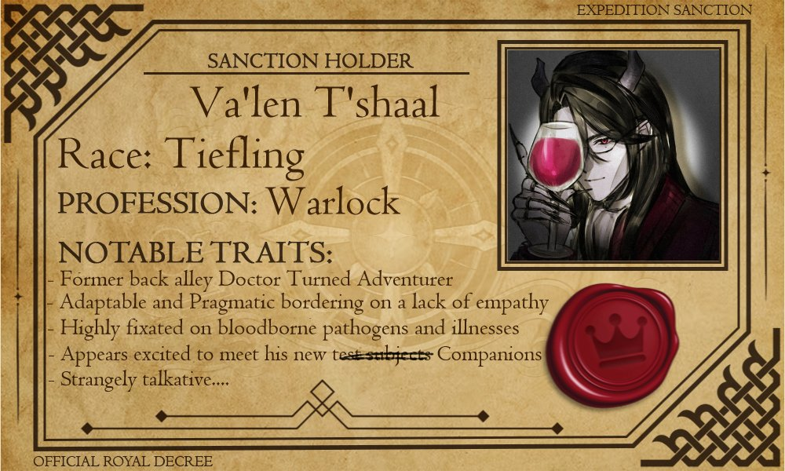

Va’len T’Shaal
- Race / Species
- Tiefling
- Class
- Warlock
- Background
- Noble, turned Failed Doctor
- Alignment
- Lawful Evil

Va'len T'shaal: Doctor, Warlock, and Heartless Pragmatist. Running from his prior crimes in the homeland, Va'len hopes that his particular style of reseach might become the foundation of this new world.
After all, somone needs to think of "The Greater Good"
Source: source ( Art by @azuchicastle21 )
The problem
Fieldnote's engineers file inspection reports from sites with patchy signal — the bottom of a wind turbine, a basement plant room, a truck cab between stops. The existing editor synced on every keystroke, so a dropped connection didn't just pause saving, it silently discarded it. Support tickets about "where did my report go" outnumbered every other category combined.
What we tried first
The obvious fix was a longer retry queue and a "saving…" indicator that stayed honest about connection state. It shipped in a week and made the problem worse: engineers now watched a spinner that never resolved, then closed the tab anyway. The editor needed to stop treating the network as a dependency, not get better at apologising for it.
The rebuild
Every report now writes to local storage first and syncs in the background whenever a connection exists, with the UI never blocking on it. Conflicts — two engineers editing the same report after a signal gap — resolve with a field-level merge and a manual review only when the same field changed on both sides, which turned out to be rare enough to not need solving upfront.
Nobody on the team thinks about the editor anymore, which is exactly the point. It just works, even out of signal.
The result
Three months after launch, average report time had dropped from 11 minutes to 4, and adoption in the field crews that had quietly gone back to paper recovered fully. No report has been lost to a dropped connection since.
- 4 min
- Average report time, down from 11
- 92%
- Field adoption within a quarter
- 0
- Reports lost to dropped connections since launch